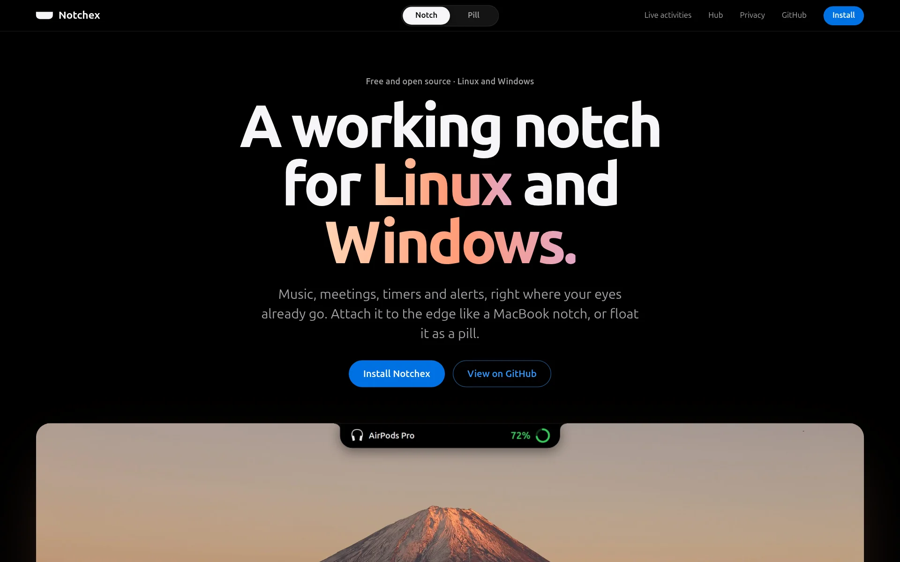
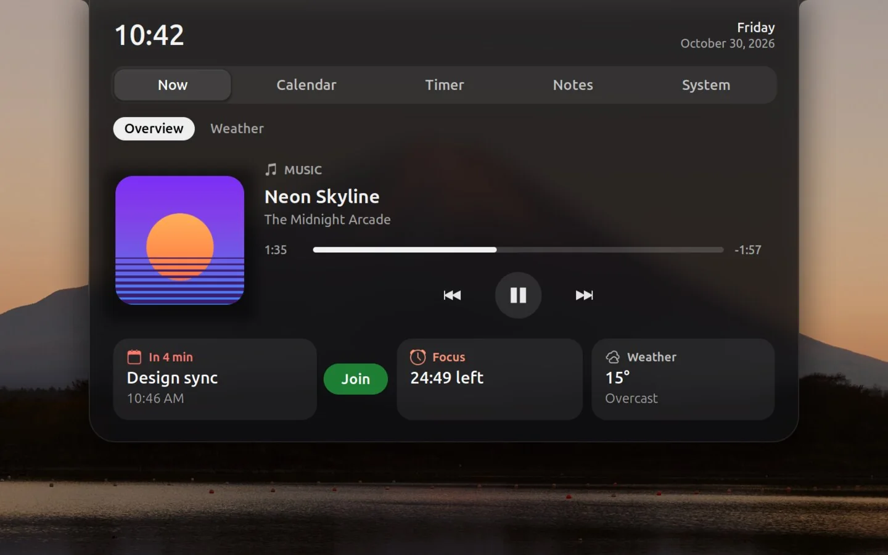
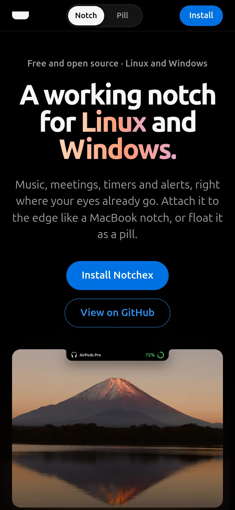
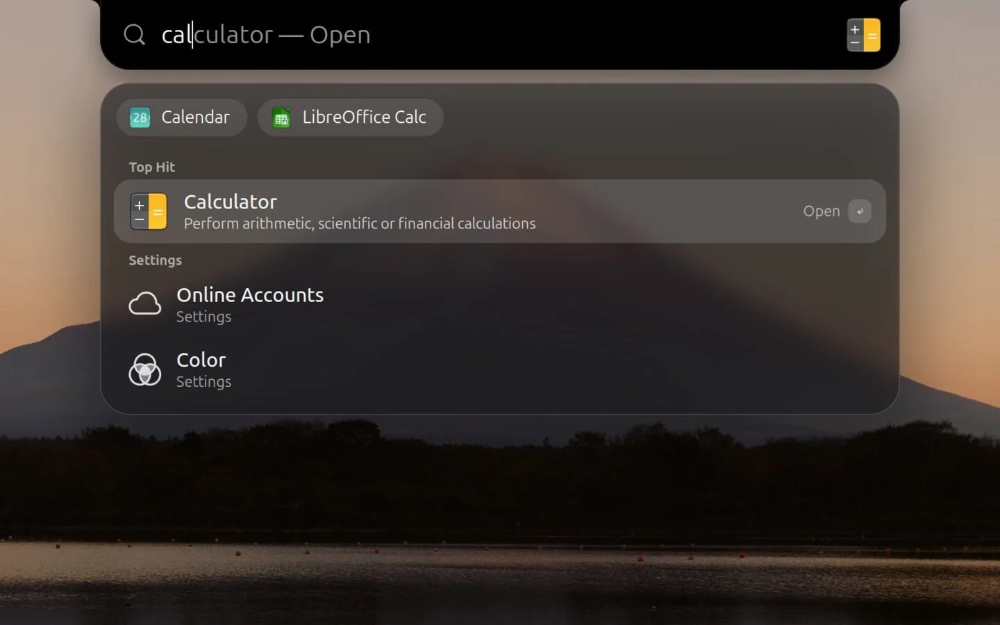
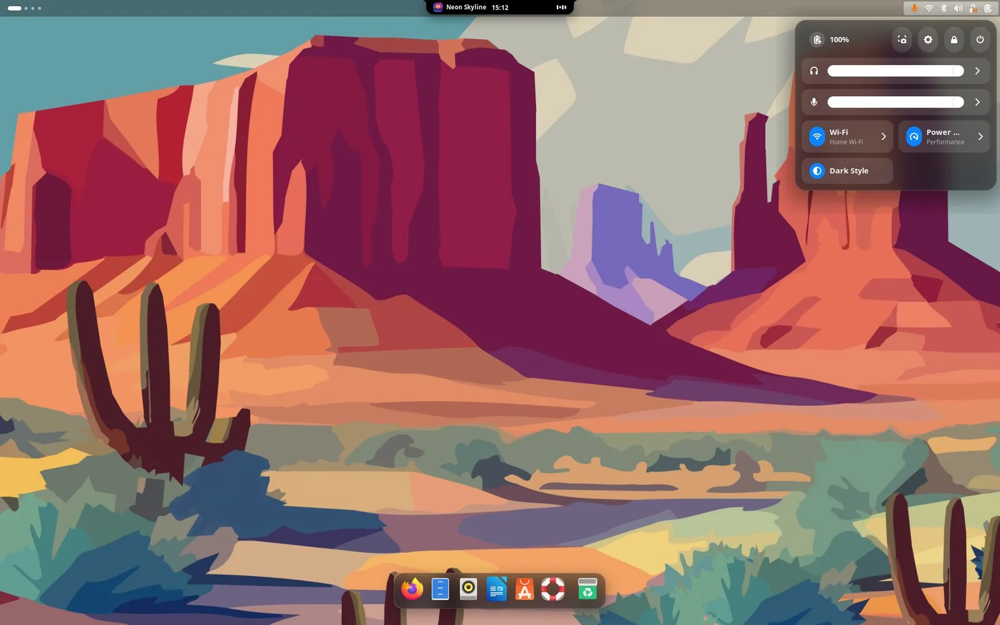
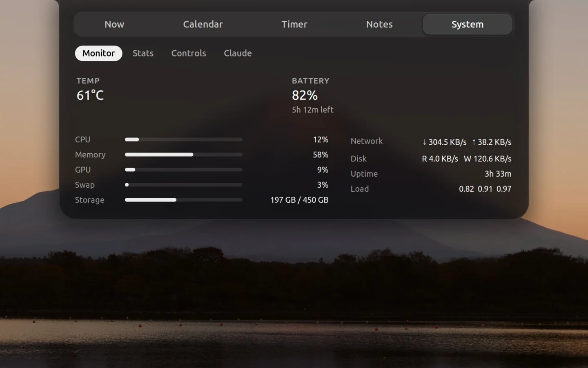
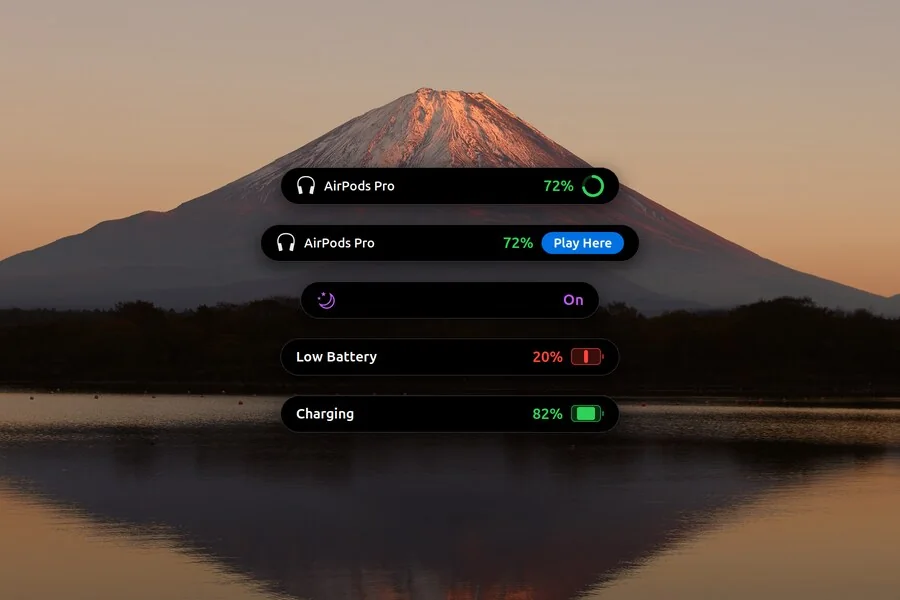

A MacBook-style notch for GNOME and Windows. It shows music, meetings, timers and alerts where your eyes already go, grows briefly for live activities, and opens into a hub with Spotlight-style search, with a magnifying Dock and frosted glass around it. Free and open source under GPL-3.0, installed with one line and no admin rights.

Interface





Live activities
A notch is only useful if it stays out of the way. Every source in Notchex is signal-driven: nothing polls while the notch is idle, and one arbiter decides what earns the space at the top of the screen.
-
01
Signal
MPRIS players, the PipeWire mixer, UPower, BlueZ, the message tray and the Shell's calendar server push changes. The clock ticks once a minute, aligned to the minute.
-
02
Arbitrate
Critical battery beats a notification, which beats media, Bluetooth, volume, brightness and calendar. Less important events wait in a short queue and expire if they go stale.
-
03
Show
The notch grows for the event, or uses a compact look that keeps its height and stretches sideways. Holding the volume key updates the same event in place rather than animating again.
-
04
Settle
It returns to what it was showing. GNOME's own volume popup is hidden only while the notch can show the change, and comes back when it cannot.

Architecture
-
≋
Audio analysis out of process
The equaliser bars are computed by a separate GJS process reading the speaker output, never the microphone. A stalled audio pipeline can never freeze the compositor, and it exits with the Shell.
-
◐
Glass with rounded corners
GNOME's blur has no corner radius, so Notchex masks a blurred clone of the windows to each rounded shape with a small shader. The blur is off on the lock screen, so it never shows windows there.
-
⏻
Modules that really stop
Each of the 39 modules owns its own start and stop, and all async work runs through a cancellable. Turning a feature off stops it completely, with no calls left pending on destroyed objects.
Engineering decisions
-
0
No build step
Plain ES modules on St and Clutter: no Electron, no npm, no transpiler. GNOME Shell loads the files directly, so what is in the repository is what runs.
-
∿
Polling only when seen
System stats are read only while the Monitor view is on screen; the media progress timer exists only while the player is visible and a track is playing.
-
46
One file for version differences
Every difference between GNOME 46 and 50 lives in a single compatibility module, so five Shell versions are supported without version checks spread through the code.
-
⇥
Layout once, animate the shell
Animations move only the notch itself. Tab content is laid out once at its final width, so nothing reflows on every frame, and the notch, Dock and Spotlight share one motion style.
-
🔒
Private by default
No telemetry. Weather, calendar and usage go online only when turned on, and the Windows installer checks each build against the release's SHA-256 sums before running it.
Stack
-
GN
GNOME extension
- GJS
- St · Clutter
- Mutter
- GSettings
- Adwaita prefs
-
IO
System integration
- D-Bus
- MPRIS
- PipeWire
- UPower · BlueZ
- GStreamer
- GNOME Online Accounts
-
WIN
Windows app
- C#
- WPF
- .NET 8
- System media controls
- x64 · Arm64
-
CI
Release
- GitHub Actions
- GitHub Releases
- install.sh
- install.ps1
- GPL-3.0
Notchex / Free and open source